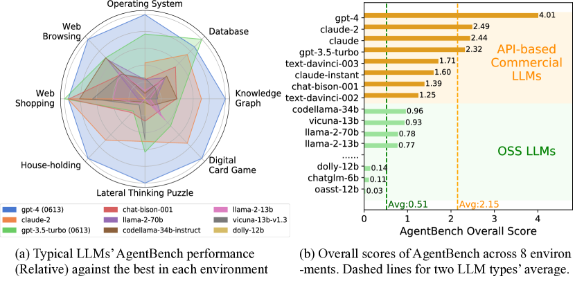

Agent 评估
LLM 评估是「问一题判一分」，Agent 评估是「派一个任务看它能不能自己做完」——要管环境、管过程、管成本。怎么设计一套能反映真实价值的 Agent 评测？这一页从任务完成率、轨迹质量、成本效率三个维度拆开讲，并拆解 SWE-bench Verified、GAIA、BrowseComp 的设计思路。
Agent 评估的独特之处在于「环境交互」：同一任务，Agent 可以走不同的工具调用路径，有的直奔终点，有的原地打转。所以评估要同时看三个维度——最后成没成（完成率）、走得顺不顺（轨迹质量）、花得多不多（成本效率）。
目标是否达成"] R --> R2["轨迹质量
步骤合理性 · 错误次数"] R --> R3["成本效率
token · 调用 · 耗时"] R1 --> S["综合评分 + 人工抽检"] R2 --> S R3 --> S
一、为什么 LLM 评估框架不够用
传统 LLM 评估是「单轮问答」：输入一个 prompt，比对一个答案，简单、可复现。Agent 完全不同：
（调工具 / 观察 / 再决策）"] A3["依赖环境状态
结果随环境变化"] A4["有随机性
单次跑分不可信"] end LLMEval --> Compare{"核心差异"} AgentEval --> Compare Compare --> Key["从『判答案』
变成『判一串动作』"]
- 多轮与分支：Agent 自己决定调哪个工具、走哪条路，输出不是「一个答案」而是「一串动作」。
- 环境依赖：结果取决于环境状态（仓库代码、网页内容、API 返回），环境变了结果就变。
- 随机性：采样、环境扰动都会让同一 Agent 两次表现不同，单次跑分不可信。
还有一个常被忽视的差异：LLM 评估的答案空间小——通常对就是对、错就是错；Agent 评估的完成是渐进连续的——任务可能只完成一半，数据库改了一部分但报错了。这要求判定器能区分「完全成功」「部分完成」「彻底失败」三种状态，而不仅仅是二元的通过与失败，否则一半的改进信号都被抹平了。
所以 Agent 评估的核心挑战是：如何在一个「可重复的环境」里，量化「一串动作」的质量。
这引出一个常见的实务误区：很多人觉得「把 Agent 的最终回答丢给 LLM 评个分」就是 Agent 评估了。这种简化丢掉了两个 Agent 评估最独特的东西。一是环境状态——Agent 的产出往往不是文本，而是「数据库里多了一行记录」「文件系统里多了一个文件」这种环境改变，不看环境只看最终文本等于盲人摸象；二是过程——同一份产出可以由 5 步的干净轨迹产生，也可以由 50 步的乱撞轨迹产生，两者的可靠性、可维护性和成本完全不同，只评最终结果就把这些信息全扔了。所以完整的 Agent 评估至少要有三个视图：结果视图（成没成）、过程视图（怎么成的）、成本视图（花了多少）。本页接下来就按这三个视图展开。
二、维度一：任务完成率
完成率是最直觉的指标——任务到底成了没有。但「成了」的定义需要仔细设计，因为 Agent 的输出是「环境状态改变」而非「文本答案」。设计判定标准时有一条分界线：判定要尽量客观、可自动、与执行过程无关。也就是说，判定的依据应该是任务留下的最终痕迹（文件对不对、数据库状态是否符合预期、网页上是否出现了目标内容），而不是 Agent 自己声称的结果。任何允许「Agent 说完成就完成」的判定，都是在给假阳性开绿灯——模型在上下文里看到自己做了某步，很容易误以为任务已达成。
文件 / 数据库 / 网页"] Judge -->|"测试用例"| S2["运行隐藏测试
代码类任务"] Judge -->|"LLM 判分"| S3["大模型评审
开放任务"] Judge -->|"人工评审"| S4["人类标注
最可靠"] S1 --> Pass["通过 → 计 1 分"] S2 --> Pass S3 --> Pass S4 --> Pass Pass --> Rate["完成率 = 通过数 / 任务总数"]
| 判定方式 | 原理 | 优点 | 缺点 | 代表基准 |
|---|---|---|---|---|
| 状态检查 | 检查最终环境状态 | 客观 | 状态设计成本高 | OSWorld |
| 测试用例 | 运行隐藏测试 | 强客观、可自动 | 只适合代码类 | SWE-bench |
| LLM 判分 | 大模型评审结果 | 覆盖开放任务 | 判分模型可能误判 | GAIA 部分任务 |
| 人工评审 | 人类标注 | 最可靠 | 贵、慢、不可扩展 | 基准验证集 |
三、维度二：轨迹质量
两个 Agent 都完成了任务，但一个 5 步搞定、一个 50 步原地打转——完成率无法区分它们。轨迹质量衡量「过程好不好」：
→ 步 3: 执行 → 完成"] G2["步骤少 · 无重复
无无效调用"] end subgraph Bad["低质量轨迹"] B1["步 1-10: 反复检索同一关键词
步 11-30: 错误调用 + 重试"] B2["步骤多 · 大量重复
无效调用多"] end Good --> Metrics["轨迹质量指标"] Bad --> Metrics Metrics --> M1["步数 / 调用次数"] Metrics --> M2["重复率 / 无效调用率"] Metrics --> M3["首次成功所需步数"]
常用的轨迹质量指标：
- 平均步数 / 工具调用次数：完成任务需要多少步，越少越好；
- 重复率：同一工具 + 同一参数被重复调用的比例；
- 无效调用率：返回错误或无关结果的调用占比；
- 轨迹长度效率：最优步数与实际步数的比值。
光列指标不够，还得知道它们怎么算、怎么用。以「重复率」为例，它定义为一整条轨迹里「相同工具 + 相同参数」组合重复出现的次数占总调用次数的比例。计算时要注意归一化：一次任务中调用 search("RAG") 三次，如果三次参数完全相同，前两次算重复，第三次算正常吗？不算——更准确的算法是「首次出现不算重复，此后每次相同参数出现都计一次重复」，这样重复率才有上界且不随调用次数虚涨。业界常见的分布是：健康轨迹的重复率在 5% 以下，卡壳轨迹的重复率常超过 30%，两者一眼可分。
「轨迹长度效率」稍微复杂一点，它需要一个参考基线：要么用人工解出的最短路径，要么用已知最优 Agent 的轨迹长度。设最优步数为 \(L^*\)，实际步数为 \(L\)，轨迹长度效率就是 \(L^*/L\)。这个指标的精妙之处在于它同时惩罚两类问题：绕路（\(L\) 大）和偷工（提前终止导致任务实际没完成，\(L\) 虽然小但完成率低）。所以报告轨迹长度效率时必须和完成率并列，否则会出现「一个没完成任务、只走 2 步的 Agent 轨迹效率反而是 100%」的荒谬结果。更稳妥的做法是只在完成任务的子集上计算轨迹指标，把「未完成任务的轨迹」单独归类分析——它们的共同特征是通常伴随着高重复率或过早终止，是定位系统缺陷的最好线索。
四、维度三：成本效率
Agent 的成本远高于单轮 LLM：多轮调用、长上下文、工具调用都花钱。同样的完成率，成本差 10 倍的系统没有可比性。
输入 + 输出"] Cost --> C2["工具调用费用
API 计费"] Cost --> C3["时间成本
端到端耗时"] Cost --> C4["失败重试成本
错误轨迹浪费"] C1 --> Eff["成本效率 = 完成率 / 成本"] C2 --> Eff C3 --> Eff C4 --> Eff Eff --> Compare["跨系统公平比较"]
实践建议：评估报告里永远同时报完成率与成本——「A 完成率 80%、成本 $1/任务」vs「B 完成率 82%、成本 $4/任务」，B 可能并不更好。标准化到「每美元完成任务数」或「每任务平均耗时」更方便对比。
一个完整的成本算例
把三个维度放在一起算一遍，体会它们是如何互相制约的。假设你评估两个 Agent 系统在同一个 40 任务的测试集上的表现，每个任务跑 5 次，采样数相同。系统 A 用轻量模型，每轮推理约 0.002 元，平均一个任务要跑 12 轮；系统 B 用更强的模型，每轮 0.006 元，平均一个任务只要 6 轮。先算单任务成本：A 是 12 × 0.002 = 0.024 元，B 是 6 × 0.006 = 0.036 元——B 贵了一半。但如果 B 的完成率是 82% 而 A 只有 68%，「每完成任务成本」这个指标就倒过来了：A 要 0.024 ÷ 0.68 ≈ 0.035 元/完成，B 是 0.036 ÷ 0.82 ≈ 0.044 元/完成——反而是 A 更省。如果把「一次任务没完成」造成的业务损失也折成钱，这个结论可能再次反转。这就是为什么单看任何一个裸指标都会得出片面结论，评估报告必须给出一组可拆解的数字，而不是一个总分。
在真实的评测系统里，成本数据要从轨迹日志里自动采集，而不是人工估算。每条轨迹需要记录：输入的 token 数、输出的 token 数、每次工具调用的类型与耗时、是否需要重试。把这些字段落成结构化日志，跑分脚本就能自动汇总出「每任务 token 消耗」「每完成任务成本」「平均端到端耗时」三个派生指标。注意一个隐蔽的坑：重试会大幅抬高成本。一次失败的调用通常比成功的调用消耗更多 token（多一次错误反馈、多一轮重试），如果评测报告只报「成功轨迹的成本」，就会系统性低估真实成本。正确做法是统计口径明确区分「含失败的成本」和「仅成功的成本」，并在报告里同时给出。
五、三大代表性基准的设计拆解
理解主流 Agent 基准的设计哲学，能帮你设计自己的评估。三个代表分别覆盖「真实软件工程」「真实世界问题」「真实网页搜索」。先看一张论文原图——它是 AgentBench 论文的第一张图，也是「Agent 评估和 LLM 评估完全不同」最直观的证据。

手把手读这张图：它由上、下两幅图组成，但讲的是一件事——同样一批 LLM，在 8 个不同的交互环境里当 Agent，成绩能差多少。上面那幅（a）是每个模型在各环境上的「相对表现」：把每个环境里的最佳成绩记为 1.0，其余模型都按比例折算，这样一眼就能看出某模型在哪个环境拖后腿。下面那幅（b）是 8 个环境的总体分数汇总，虚线代表商业 API 模型和开源模型两个群体的平均线。
这张图最值得注意的不是具体分数，而是它的形状：没有一个模型在所有环境上都是第一。有的模型在操作系统任务上很强，在网页购物上却很弱。这直接推翻了「找一个全能模型」的幻想——Agent 能力是分环境的，不是铁板一块。论文的另一个结论也写在图里：商业 API 模型的平均线明显高于多数开源模型，说明当 Agent 这件事对「指令遵循 + 长程推理」的要求远高于普通问答，而这两点正是当时开源模型的短板。做你自己的 Agent 评估时，记住这个教训：别用一个环境的分代表 Agent 的全部能力，至少覆盖 3-5 个差异化的环境。
顺便说明环境构成：AgentBench 的 8 个环境里有 5 个是全新搭建的（操作系统 OS、数据库 DB、知识图谱 KG、数字卡牌 DCG、横向思维谜题 LTP），3 个改编自已有数据集（家务 Household 改编自 ALFWorld、网页购物 WebShop、网页浏览 Mind2Web）。这个「新造 + 改编」的组合思路很实用——既有全新的可控环境，又有社区熟悉的基准方便对照。
+ 完整代码仓库"] S2["判定：运行隐藏测试
修复是否通过"] S3["覆盖：软件工程修复"] end subgraph GAIA["GAIA"] G1["真实世界问题
需推理 + 工具 + 多步"] G2["判定：LLM + 人工
答案匹配"] G3["覆盖：通用助手任务"] end subgraph Browse["BrowseComp"] B1["复杂网页搜索
多跳信息定位"] B2["判定：答案精确匹配"] B3["覆盖：深度检索"] end SWE --> Design{"设计要点"} GAIA --> Design Browse --> Design Design --> D1["环境真实可重复"] Design --> D2["判定客观可复现"] Design --> D3["任务有难度梯度"]
| 基准 | 任务类型 | 环境 | 判定方式 | 测什么 |
|---|---|---|---|---|
| SWE-bench Verified | 修真实 GitHub issue | 真实代码仓库 | 隐藏测试通过 | 代码理解 + 修复能力 |
| GAIA | 真实世界问题（多步） | 开放互联网 + 工具 | LLM + 人工匹配 | 推理 + 工具使用 |
| BrowseComp | 复杂网页搜索 | 模拟浏览器 | 答案精确匹配 | 深度检索能力 |
| OSWorld | 操作系统 GUI 操作 | 真实 OS 环境 | 最终屏幕状态 | GUI 交互能力 |
| τ-bench | 客服 / 零售场景多轮 | 模拟用户 + 工具 | 业务目标达成 | 多轮对话协作 |
如果把时间轴拉长看，这些基准的演进方向是有规律的：从「单轮问答」到「单任务单工具」再到「多轮多工具」，环境的真实性逐年逼近真实生产。理解这条线，能帮你预判下一步该测什么能力：
这条时间线对实际工作有两个直接启示。第一，别迷信「一个基准包打天下」——2023 年的基准只测单工具调用，根本测不出今天多步协作 Agent 的真实水平；选基准时要看它覆盖的任务形态和你的产品是否一致。第二，基准分和你线上体验常常脱节——基准环境再真实也是人工构造的，真实用户的数据分布、界面状态、异常路径远比基准复杂。所以成熟团队的做法始终是「公开基准做横向对标，自建集做纵向回归」，两者缺一不可。
六、自建 Agent 评估的实践框架
真实产品团队的 Agent 评估通常是「公开基准 + 自建任务」的组合。自建任务才能覆盖你自己的业务场景：
挑 20-50 个代表性场景"] --> Step2["② 搭可重复环境
沙箱 / 测试数据 / 模拟用户"] Step2 --> Step3["③ 定义成功标准
状态检查 / 测试 / LLM 判分"] Step3 --> Step4["④ 记录完整轨迹
每步动作 + 结果 + 成本"] Step4 --> Step5["⑤ 三维评估
完成率 + 轨迹 + 成本"] Step5 --> Step6["⑥ 回归跑分
每次改动后对比"] Step6 -->|"指标下降"| Debug["定位回归原因"] Step6 -->|"指标稳定"| Release["放心发布"]
工程要点：
- 任务量：20-50 个代表性任务足够发现大多数问题，100+ 更稳但维护成本高；
- 环境可重复性：每次跑分用相同初始状态（重置数据库、清空缓存）；
- 多次采样：每个任务至少跑 3-5 次取平均，抵消随机性；
- 人工抽检：LLM 判分结果定期人工复核，防判分模型漂移。
七、评估环境如何做到「可重复」
「可重复」是 Agent 评估的命根子，但也是最容易被低估的工程活。原因很简单：如果两次跑分环境不一样，你根本分不清结果是 Agent 变强了，还是环境变简单了。比如一个网页操作任务，第一次跑分时目标网站是正常状态，第二次恰好遇到对方改版——两次结果差异完全可能被误读成「模型能力波动」。
要做到可重复，核心手段是把环境做成可以随时重置的快照。三类环境各有各的做法：代码类任务用容器镜像加隐藏测试，每次从镜像重新起一个干净仓库；数据类任务用数据库 dump 加固定的随机种子，确保查询结果一致；网页类任务则用 mock 服务替代真实网站，把返回内容固化成测试夹具。这三类的共同点，是把「不可控的外部世界」替换成「我们说了算的确定性版本」。
算一个具体的账：假设你的自建集有 50 个任务，每个任务要跑 5 次采样取平均，那就是 250 次任务执行。如果每次环境重置要 3 秒、任务本身平均 40 秒，总耗时大约是 250 × 43 秒 ≈ 3 小时。听起来可以接受，但真正的陷阱在别处——重置的完整性和并发污染。用共享数据库跑并发评测时，任务 A 写入的脏数据可能被任务 B 读到，于是 A 的成绩被「借」给了 B。解决方式是任务之间严格隔离：要么串行执行，要么每次重置独立的命名空间，而不是共享一份资源。
展开：环境重置清单（照着逐项核对）
- 文件系统：工作目录是否恢复到干净状态？临时文件、缓存、上次任务留下的产物都要清掉。
- 数据库：数据是否恢复快照？自增主键是否归零？并发任务是否用独立 schema 或库名？
- 网络：外部 API 是否被 mock？mock 响应是否与真实分布一致（含错误分支）？
- 随机性：模型采样 temperature 是否固定？环境侧随机数种子是否固定？
- 时间：涉及时间的任务是否用假时钟？否则同一任务不同时刻跑结果不同。
- 模型版本：判分模型与被测模型版本是否锁定？升级模型等于换尺子。
八、跑几次才可信：统计显著性的账
新手最容易犯的错是「每个任务只跑一次，看到分数就下结论」。Agent 的结果有随机性——模型采样有温度、工具返回有波动，同一个任务两次跑，结果可能一次成功一次失败。单次跑分给出的不是「完成率」，只是「这一次完成没完成」。
把问题说得正式一点。对单个任务，每次运行可以看作一次伯努利试验：成功记 1，失败记 0。跑 n 次成功 k 次，完成率的估计值是 k/n，而这个估计的波动幅度可以用标准差衡量。对伯努利分布，估计值 \(\hat{p}\) 的标准差近似为 \(\sqrt{\hat{p}(1-\hat{p})/n}\)。代入一个例子：某任务真实完成率约 0.6，跑 5 次，标准差就是 \(\sqrt{0.6 \times 0.4 / 5} \approx 0.22\)。这意味着 5 次采样给出的完成率，置信区间的宽度常常超过 ±0.4——这个数几乎没意义。跑到 20 次，标准差降到约 0.11；到 50 次，约 0.07。
所以「每次跑 3-5 次取平均」这条经验其实偏乐观。更稳妥的做法是先做一次方差摸底：挑 5 个代表性任务各跑 10 次，算出实际标准差，再反推需要的采样数。下面的代码演示了这个过程：
import math
def needed_samples(p_hat, margin, z=1.96):
"""估算达到指定误差范围所需的最小采样次数
p_hat: 摸底得到的完成率估计值
margin: 想容忍的误差（比如 0.05 表示±5%）
z: 95% 置信度对应 1.96
"""
if p_hat <= 0 or p_hat >= 1:
return 1
n = (z ** 2) * p_hat * (1 - p_hat) / (margin ** 2)
return math.ceil(n)
# 摸底：5 个任务各跑 10 次，得到完成率约 0.7
n_single = needed_samples(0.7, 0.1) # ±10% 需要约 81 次
n_precise = needed_samples(0.7, 0.05) # ±5% 需要约 323 次
print(n_single, n_precise) # 输出约 81 和 323这个数会不会大得吓人？会。但请想清楚：80 次采样换来 ±10% 的精度，意味着你能分辨「完成率 70% 还是 75%」这种级别的差异；如果你想做的决策只是「新版本比旧版本好还是差」，那 30-50 次也够用了——用置信区间去看两个版本的重叠程度，而不是盯着一个裸数字。另一个降低采样成本的办法是分层采样：任务按难度分层，每层内部的方差比整体小得多，用更少的样本就能达到同样的统计功效。别一上来就全量跑到几百次，先把方差摸清楚，钱要花在刀刃上。
九、LLM 判分的偏差：尺子本身也会歪
用 LLM 当判分器（LLM-as-a-Judge）覆盖面广、成本低，但它的分数不是中性客观的——判分模型自己有一堆系统性偏好。最出名的是三类：位置偏差（两个答案摆一起，判分模型更偏向先出现的那一个）、冗长偏差（写得长的答案更容易被判高分，哪怕内容空洞）、自我偏好（判分模型偏袒和自己同源或同风格模型的输出）。这些偏差不是偶然误差，它们会稳定地扭曲你的排名。
举个可验证的例子：把两个 Agent 对同一任务的两条轨迹提交给 LLM 判分，A 排在前面时 A 赢；把顺序对调后再评，胜负可能翻盘。实测中这种顺序翻转的比例达到 10-20% 并不罕见。一个简单而有效的缓解手段是对调重评：每条对比评两次（顺序正反各一次），只有两次结论一致才采信，不一致的标记为「存疑」送人工。代价是判分调用量翻倍，但换来的是分数可靠性的数量级提升。
| 偏差类型 | 表现 | 应对 |
|---|---|---|
| 位置偏差 | 先出现的答案占便宜 | 正反顺序各评一次，只采信一致的 |
| 冗长偏差 | 长篇大论得分高 | 判分 prompt 明确限制篇幅，分维度打分 |
| 自我偏好 | 判分模型偏袒同源输出 | 判分模型与评测目标刻意不同源 |
| 漂移 | 判分标准随版本变化 | 锁定判分模型版本，定期人工抽检校准 |
更系统的做法是把「整体打分」改成维度拆解：不要问「这条轨迹好不好」，而是分别评「任务是否完成」「步骤是否高效」「是否遵守安全约束」「成本是否合理」，每个维度独立给分再汇总。维度拆解有两个好处：一是逼着判分模型逐项核对而不是凭整体印象打分；二是失败模式可归因——你能看出来这次失分是因为完成度不够还是路径绕远了。这部分判分方法论与一般 LLM 评估的深入讨论，可参考 评估方法论 与 LLM 判分器（详见上文「判分器设计」小节）。
展开：判分器 prompt 的翻车实录——一句「请打分」为什么不行
用 LLM 当判分器时，新手最常见的做法是给一句「请给这条 Agent 轨迹打分，1-10 分」。这个 prompt 至少有三个坑，逐个拆：
坑 1：没有给「判分维度」。模型不知道「10 分」意味着什么，只能凭整体印象打——结果分数分布高度集中在 7-9 分，几乎没有区分度。正确做法是把「完成度 / 路径效率 / 安全合规 / 成本」拆成四个独立维度，每个维度单独打分再汇总。这也是本页前面「维度拆解」一节讲的方法。
坑 2：没有给「打分锚点」。模型不知道 7 分和 8 分的区别。给一组带分数的示例（few-shot）能让打分稳定得多，例如「5 分：任务未完成但路径方向正确；8 分：任务完成但绕了路；10 分：任务完成且路径最优」。锚点示例越多，模型间的打分方差越小。
坑 3：没有处理「对调一致性」。同一个轨迹，把候选答案 A 和 B 的顺序对调后重新打分，结果经常翻转。这是位置偏差的表现。实测中这种翻转在 10-20% 的样本上会发生——所以生产级判分器都会做「正反各评一次，只采信一致的」，不一致的送人工。
一句话总结：判分器的 prompt 写得好不好，直接决定你的评估可信不可信——而可信度是评估的生命线。判分器 prompt 也可以参考 评估方法论 中的通用设计。
十、常见陷阱
| 陷阱 | 表现 | 后果 | 应对 |
|---|---|---|---|
| 只看完成率 | 忽略轨迹与成本 | 选错系统 | 三维同时报告 |
| 单次跑分 | 随机性未处理 | 分数波动误导 | 多次采样取平均 |
| 环境不可重复 | 两次结果不同 | 无法对比 | 固定初始状态 |
| 数据污染 | 任务出现在训练集 | 分数虚高 | 任务定期更新 |
| 判分模型漂移 | LLM 判分标准变化 | 跨期不可比 | 固定判分模型 + 人工抽检 |
十一、结果、过程与安全：三层评估契约
把 Agent 评测拆成三层，可以避免「任务完成了就算优秀」的误判。结果评估回答业务目标是否达成，过程评估回答轨迹是否高效、可解释、可恢复，安全评估回答在不可信输入、越权请求和高风险工具面前是否守住边界。三层既要分别设闸门，也可以在报表中组合成一个可审计的评分卡。
| 层级 | 核心问题 | 推荐信号 | 自动判定 | 发布门槛示例 |
|---|---|---|---|---|
| 结果 Outcome | 业务目标是否达成？ | 状态断言、隐藏测试、答案正确性、部分完成度 | 状态检查 / 测试 / 结构化 judge | 完成率 ≥ 目标；关键断言全通过 |
| 过程 Process | 路径是否高效且可恢复？ | tool success、recovery、重复率、step efficiency、state diff | 轨迹解析器 + 规则指标 | 重复调用率、无效调用率不超阈值 |
| 安全 Safety | 是否越权、泄露或执行危险动作？ | 策略违规、提示注入成功率、敏感数据暴露、确认遵循 | 策略规则 + 攻击集 + 人工复核 | 高风险失败数 = 0；注入防御率达标 |
11.1 部分完成分数与硬性安全闸门
结果分不应只有 0/1。把任务拆成带权重的可观察断言：例如代码修复的测试通过占 0.6、回归测试占 0.2、补丁范围占 0.2；浏览器任务的目标页面状态、字段准确性、提交成功分别设权重。定义部分完成分数：
\(S_{outcome}=\sum_{i=1}^{m} w_i\,a_i,\quad w_i\ge 0,\ \sum_iw_i=1,\ a_i\in[0,1]\)。但安全不能被平均分稀释：只要触发「泄露密钥、未确认转账、越权写入」等不可接受事件，就将 \(S_{safe}=0\)，整体结果直接阻断，而不是用其他维度高分抵消。
十二、可靠性统计：pass^k、置信区间与显著性
单次成功率容易被随机性误导。对同一任务独立运行 \(k\) 次，只要至少一次成功，得到 pass^k：若单次成功概率为 \(p\)，理想独立假设下 \(pass^k=1-(1-p)^k\)。报告时应同时给出 per-run pass@1、pass^k 和「所有运行都成功」的可靠性，避免用较大的 k 掩盖单次失败率。
| 统计量 | 定义 / 估计 | 面试时要强调 |
|---|---|---|
| pass@1 | 一次运行成功的比例 \(\hat p=k/n\) | 最接近用户一次尝试的体验 |
| pass^k | 同题 k 次至少成功一次：\(1-(1-\hat p)^k\) | 适合衡量「给 Agent 重试机会」后的覆盖率 |
| 可靠性 / all-pass | 同一任务 k 次全部成功的比例 | 适合高风险自动化，不能只看至少成功一次 |
| 部分完成分 | 加权断言分 \(\sum w_i a_i\) | 给调试提供梯度，但安全违规仍是硬失败 |
| 重复运行 CI | 按任务聚合后给 Wilson 或 bootstrap 区间 | 报告样本量、随机种子、模型版本和区间 |
二项比例不要只报「72%」：小样本或接近 0/1 时，正态近似会失真，优先使用 Wilson 区间；对包含轨迹长度、成本、部分完成分等复杂统计量，按任务为重采样单位做 bootstrap，避免同一任务的多次运行泄漏到训练与检验两侧。可用 SciPy bootstrap 文档 实现百分位或 BCa 区间。
# 伪代码：以任务为单位做 bootstrap，比较两个版本的完成率差
for _ in range(B):
sampled_tasks = rng.choice(task_ids, size=len(task_ids), replace=True)
delta.append(rate(new, sampled_tasks) - rate(old, sampled_tasks))
ci = np.quantile(delta, [0.025, 0.975])
# 若差值区间不跨 0，再结合预先设定的最小实际提升（practical delta）发布版本比较至少应有三件套：差值、置信区间、预先约定的实际显著阈值。例如「完成率提升 2 个百分点」可能统计显著，却不足以抵偿成本上涨；反之，区间较宽时不能因为点估计领先就宣布胜出。对于二元结果可用 McNemar 检验（同一任务配对运行），对于成本或轨迹长度可用配对 bootstrap；不要在看完结果后才挑选检验方法。
十三、Trajectory-level metrics：从调用日志定位失败模式
将每一步规范化为 (state_before, action, tool_result, state_after, latency, tokens)，再从轨迹而不是最终答案计算指标。这样既能发现「结果碰巧正确但路径危险」，也能定位「哪一个工具调用让任务走向失败」。
| 指标 | 计算口径 | 解释 / 诊断动作 |
|---|---|---|
| tool success rate | 成功返回且满足 schema 的调用数 / 总调用数 | 区分工具本身失败与模型参数错误 |
| recovery rate | 发生可恢复错误后最终回到正确状态的次数 / 可恢复错误次数 | 衡量重试、改参、回滚是否有效 |
| 重复调用率 | 首次出现相同 tool + normalized args 后的重复次数 / 调用数 | 发现循环、缓存缺失和记忆失效 |
| step efficiency | 完成任务的参考最短步数 \(L^*\) / 实际步数 \(L\) | 只在完成子集上比较，并与完成率并报 |
| state diff quality | 实际状态差分与目标差分的 precision / recall / unwanted diff | 防止「文本说完成但环境没变」或误改其他对象 |
| time-to-first-valid-action | 首个满足工具 schema 且对目标状态有贡献的步骤 | 定位规划过长、工具选择错误 |
建议在日志中保存「动作前后状态摘要」而非只保存自然语言思考：文件 hash、数据库行版本、URL、DOM 关键字段、权限上下文和工具 schema 版本都可以成为 diff。对企业工具尤其要记录 actor、resource、operation、approval_id；没有这些字段，事后无法判断是 Agent 误操作还是权限配置问题。
十四、系统设计面试题：任务集、沙箱与判定器怎么建
面试回答可以沿着「风险分层 → 任务生成 → 环境隔离 → 判定信号 → 回归运营」五步展开，而不是只罗列几个 benchmark 名字。不同 Agent 的评测集必须贴合工具和失败代价：
| Agent 类型 | 评测集设计 | 沙箱关键点 | 核心判定 | 典型追问 |
|---|---|---|---|---|
| 浏览器 Agent | 登录、搜索、多跳核验、表单、动态页面、提示注入、失败恢复 | 浏览器容器；mock 外部站点；固定 cookie、时钟、网络录制；每题独立 profile | DOM / 数据库最终状态、字段准确率、外链与下载策略 | 页面改版怎么办？如何测注入与重复点击？ |
| 代码 Agent | 修 bug、补测试、重构、依赖升级、回归与恶意仓库样本 | 只读基础镜像；无宿主机权限；网络白名单；CPU/内存/时间上限；隐藏测试隔离 | 测试通过、补丁 diff、回归测试、编译与安全扫描 | 如何防止修改测试作弊？如何复现依赖？ |
| 企业工具 Agent | CRM / 工单 / 财务 / 知识库的读写、审批、撤销、权限边界与并发冲突 | 合成租户与 PII；最小权限 token；写操作审批；审计日志；事务回滚或假 API | 业务状态、权限违规、审批链、非目标对象 diff | 如何做不可逆动作的人工确认？如何处理幂等与重试？ |
一个可复用的面试回答模板：「我先按真实用户任务和风险分层，建立 happy path、边界、对抗、回归四类样本；每个样本都有版本化初始快照、工具 schema、成功断言和安全断言。运行时在一次性沙箱中限制网络、权限、资源和预算，完整记录动作、结果、state diff 与成本。结果用状态检查或隐藏测试自动判，过程用轨迹指标分析，LLM judge 只用于开放式质量维度并做正反顺序复评，抽样人工校准。最后以完成率、pass^k、p95 成本/时延和安全硬闸门决定发布。」
展开：三类系统设计题的答题骨架
- 浏览器：先讲页面状态与网络可控，再讲目标 DOM 断言、下载/外链副作用和 prompt injection 攻击集；不要只用最终文字 judge。
- 代码：先讲容器和资源隔离，再讲隐藏测试、patch diff、回归测试与网络白名单；明确「测试通过但改了不相关文件」仍可扣分。
- 企业工具：先讲租户隔离、最小权限、审批与审计，再讲幂等键、并发冲突、回滚和不可逆动作的人工接管。
十五、成本—成功率 frontier：把尾延迟和预算纳入发布决策
Agent 不能只优化平均完成率。将每个版本绘制为「成功率—每任务成本」散点，成本更低且成功率更高的点支配其他点；剩余点构成 cost-success frontier。再把 p95/p99 时延、超时率和预算触发率叠加，才能得到线上可用的选择。
| 指标 | 建议口径 | 闸门示例 |
|---|---|---|
| 单位任务成本 | 输入/输出 token、工具费、重试费全部计入 | p95 cost ≤ 预算；不能只报成功任务成本 |
| p95 / p99 latency | 从任务下发到最终状态判定的端到端耗时 | p95 满足用户 SLA，p99 触发降级或接管 |
| timeout rate | 达到 wall-clock 上限仍未完成的任务比例 | 超时不计为静默失败，输出原因码与部分完成分 |
| budget-hit rate | 触发 token / money / tool-call 任一上限的比例 | 超过阈值时阻止发布并检查循环调用 |
| frontier 选择 | 在成本约束下取最高成功率，或在成功率约束下取最低成本 | 写明业务最低成功率与最大可接受成本 |
十六、LLM judge、reference-free 与人工抽检的组合
开放式任务没有唯一参考答案时，可用 reference-free 评估：让判分器基于任务目标、环境结果、策略约束和轨迹证据独立判断，而不是与一段参考文本做相似度比较。它适合解释性、风格和过程质量，但不能替代状态断言；对代码、财务写入、权限操作等任务，仍应优先使用可执行测试和审计日志。
| 风险 | 典型偏差 | 缓解方式 |
|---|---|---|
| 比较式 judge | 位置偏差、冗长偏差、自我偏好 | 候选顺序对调；短输出与长输出分层；固定不同源 judge |
| 绝对分 judge | 分数集中、锚点漂移、解释先于证据 | 结构化 rubric、few-shot 锚点、要求引用工具结果和 state diff |
| reference-free | 把「看起来合理」误当成实际完成 | 强制注入环境状态、工具返回和策略约束；关键任务仍跑 executable checks |
| 人工抽检 | 抽样偏向简单样本，漏掉尾部风险 | 按失败类型、置信度、风险等级和版本分层抽样；记录一致性 |
一个实用的抽检策略是：100% 自动判定 + 100% 安全高风险样本人工复核 + 按「judge 不一致、边界分、异常高分、p99 超时」做分层抽样。持续跟踪 judge 与人工的 Cohen's kappa 或 Spearman 相关；相关性下降时先冻结跨版本比较，再更新 rubric 和校准集。关于 LLM judge 偏差与 MT-Bench/Chatbot Arena 的实证讨论，可参考 Judging LLM-as-a-Judge with MT-Bench and Chatbot Arena；关于代码任务 pass@k 的经典估计，可参考 Evaluating Large Language Models Trained on Code。
十七、面试回答模板：2 分钟讲清 Agent 评估
「我会把评估拆成结果、过程和安全三层。结果层用最终状态、隐藏测试和加权断言判定，并保留部分完成分；过程层记录每个 action 前后的 state diff，计算 tool success、recovery、重复调用率和 step efficiency；安全层用越权、提示注入、数据外泄和不可逆操作确认集做硬闸门。为了处理 Agent 随机性，同一任务多次运行，报告 pass@1、pass^k、all-pass 以及以任务为单位的 Wilson/bootstrap 置信区间，版本比较用配对检验和实际显著阈值。系统设计上，浏览器用可录制的 mock 网络和独立 profile，代码用无宿主机权限的容器与隐藏测试，企业工具用合成租户、最小权限、审批和审计。最后把成本、p95/p99、超时和预算触发率画成 cost-success frontier；客观断言优先，LLM judge 做双顺序复评，低置信和高风险样本人工抽检。」
要点速查
- 本质：Agent 评估是在可重复环境里量化「一串动作」的质量，核心是环境 + 轨迹 + 判定三要素。
- 三维度：完成率（成没成）、轨迹质量（顺不顺）、成本效率（贵不贵），缺一不可。
- 完成判定：状态检查 / 测试用例 / LLM 判分 / 人工评审，按任务类型选择。
- 轨迹质量：步数、重复率、无效调用率、首次成功步数。
- 成本效率：完成率/成本，永远「完成率 + 成本」成对报告。
- 代表性基准：SWE-bench（代码修复）、GAIA（真实世界）、BrowseComp（网页搜索）、OSWorld（GUI）、τ-bench（多轮协作）。
- 自建框架：梳理任务 → 搭环境 → 定标准 → 记轨迹 → 三维评估 → 回归跑分。
- 常见坑：只看完成率；单次跑分；环境不可重复；任务污染；判分模型漂移。
面试深化：Agent 可靠性评估与系统设计
面试中不要只报一个成功率。一个可上线的 Agent 评估协议，应把结果、过程、安全分层，并同时回答「成功是否稳定、动作是否健康、成本是否可控、危险动作是否被阻断」。以下模板适合浏览器、代码和企业工具 Agent 的系统设计题。
1. 可靠性统计：passk 不是 all-pass
同一任务独立运行 k 次，至少成功一次的概率估计为 pass^k = 1 - (1 - p)^k；它表示给 Agent 重试机会后的覆盖率，不等同于每次都可靠。生产报告至少并列 pass@1、pass^k 和 all-pass，并按任务聚合计算 95% 置信区间。二项比例优先使用 Wilson 区间；成本、轨迹长度等非二元指标按任务做 bootstrap，避免同一任务的重复运行让区间虚窄。可参考 pass@k 的经典估计 与 SciPy bootstrap 文档。
| 信号 | 计算 | 适用决策 | 不能替代什么 |
|---|---|---|---|
| pass@1 | 一次运行成功比例 | 用户一次尝试的体验 | 不能说明重复运行稳定 |
| passk | 同题 k 次至少成功一次 | 允许重试时的覆盖率 | 不能说明每次都成功 |
| all-pass | 同题 k 次全部成功比例 | 高风险自动化可靠性 | 不能隐藏单次失败 |
| Wilson / bootstrap CI | 比例或任务级重采样区间 | 比较版本是否真实提升 | 不能替代业务最小提升阈值 |
2. 三层契约：结果、过程、安全
- 结果层：以数据库、文件、DOM、测试结果等最终状态断言为准，允许加权的部分完成分。
- 过程层：分析每个 action 和 tool result，记录成功率、恢复率、重复调用率、有效步数和时延。
- 安全层：越权写入、密钥泄露、提示注入成功或未经确认的不可逆动作必须是硬失败，不能被高完成率抵消。
3. Trajectory metrics、沙箱与状态断言
把轨迹规范化为 (state_before, action, tool_result, state_after, latency, tokens)。评估器应检查动作前后的可观察 state diff，而不是相信 Agent 的最终口头总结。
| 指标 | 口径 | 失败诊断 |
|---|---|---|
| tool success rate | 满足 schema 且成功返回的调用 / 总调用 | 区分工具故障与参数错误 |
| recovery rate | 可恢复错误后回到正确状态的次数 / 错误次数 | 判断重试、改参、回滚是否有效 |
| duplicate-call rate | 相同工具与归一化参数的后续重复调用 / 总调用 | 定位循环与缓存缺失 |
| state-diff precision / recall | 实际差分与目标差分的精确率 / 召回率 | 发现误改非目标对象或文本假完成 |
| time-to-first-valid-action | 首个符合 schema 且对目标有贡献的步骤 | 定位规划过长与工具选择错误 |
沙箱要有一次性容器或独立租户、固定快照与随机种子、网络白名单、最小权限 token、CPU/内存/时间/金额预算和完整审计日志。每题运行前 reset；每题结束后断言目标状态和非目标状态没有意外变化。代码 Agent 还要隔离宿主机和隐藏测试，企业工具 Agent 要支持幂等键、审批和回滚。
4. 成本—成功率 frontier
将每个模型/策略版本画成「成功率—单位任务成本」散点：成本更低且成功率更高的点支配其他点，未被支配点构成 frontier。发布前再加入 p95/p99 端到端时延、超时率、预算触发率和安全失败率；明确业务最低成功率与最大可接受成本，不能用平均值掩盖尾部。
5. LLM judge 偏差与校准
LLM judge 适合开放式质量维度，不应替代可执行状态断言。重点防范位置偏差、冗长偏差、自我偏好、版本漂移：候选顺序正反各评一次，使用结构化 rubric 和 few-shot 锚点，锁定 judge 版本，并对 judge 不一致、边界分、异常高分和高风险样本做人工抽检。高风险安全样本建议 100% 人工复核；持续追踪与人工标签的 Cohen's kappa 或 Spearman 相关。可参考 Judging LLM-as-a-Judge with MT-Bench and Chatbot Arena。
6. 三个面试问答
问答一：如何评估一个浏览器 Agent？
答：我会用固定 cookie、时钟和录制/mock 网络的独立浏览器 profile，任务覆盖登录、搜索、多跳核验、表单提交、动态页面、提示注入和失败恢复。结果用 DOM/数据库状态断言，过程记录 tool success、重复点击、恢复率和 state diff；对外链、下载、提交等副作用设安全硬闸门，并按任务多次运行报告 pass@1、passk、CI、p95 时延和成本。
问答二：如何保证代码 Agent 的评测不作弊且可复现？
答：每次从锁定依赖的只读基础镜像启动无宿主机权限容器，网络按白名单限制，隐藏测试与测试夹具隔离。判定同时看隐藏测试、编译/回归结果、patch diff 和非目标文件变化；随机种子、模型版本、工具 schema、资源上限全部记录，失败轨迹保留以分析恢复率与循环调用。
问答三：完成率提升但成本翻倍，是否发布？
答：先在同一任务集上做配对比较，报告完成率差、任务级 bootstrap/Wilson 区间和预先约定的最小实际提升，再画 cost-success frontier，加入 p95/p99、超时和预算触发率。如果新版本只是被旧版本支配，或安全/尾延迟闸门失败，就不发布；若它在业务最低成功率约束下是最低成本点，再通过灰度与人工接管策略发布。
参考文献与延伸阅读
- AgentBench: Evaluating LLMs as Agents — 首个多环境 LLM-as-Agent 基准，本页论文原图来源 · arXiv:2308.03688
- SWE-bench: Can Language Models Resolve Real-World GitHub Issues? — 代码 Agent 基准 · arXiv:2310.06770
- GAIA: A Benchmark for General AI Assistants — 通用助手基准 · arXiv:2311.12983
- BrowseComp: A Simple Yet Challenging Benchmark for Browsing Agents — OpenAI 网页深度检索基准 · arXiv:2404.10198
- OSWorld: Benchmarking Multimodal Agents for Open-Ended Tasks in Real Computer Environments — GUI Agent 基准 · arXiv:2404.07972
- τ-bench: A Benchmark for Tool-Agent-User Interaction — 多轮协作基准 · arXiv:2406.12045